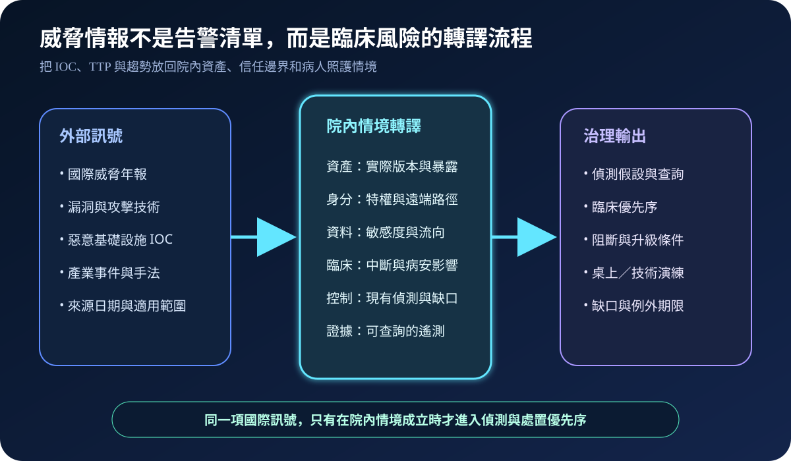
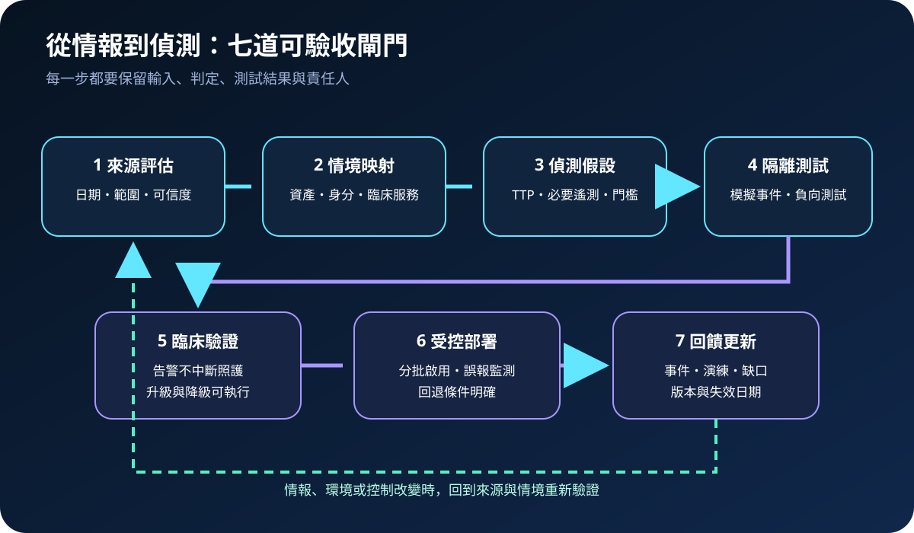
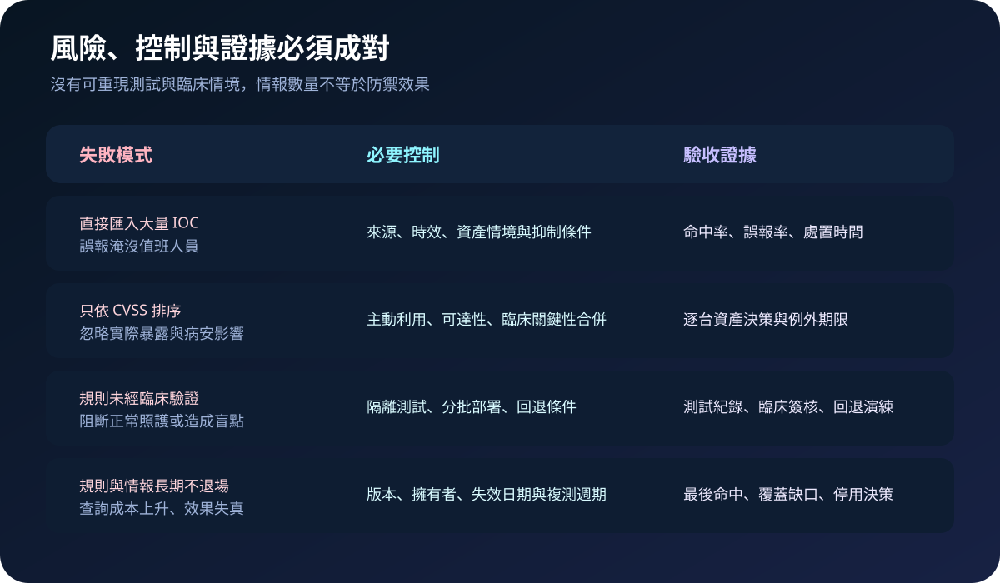

醫療資安國際觀察 · 2026-10-04
醫療威脅情報如何變成可驗證偵測：從 TTP 到臨床情境演練
作者：Dr. William｜醫療資訊與資安治理實務工作者
國際威脅報告只有在對應到院內實際資產、身分路徑、資料流與臨床服務後，才會形成可執行的偵測與處置。重點不是匯入更多指標，而是證明關鍵攻擊行為能被看見、被分級，且處置不會擴大病人安全風險。
名詞解釋：IOC、TTP 與偵測假設
威脅情報（CTI）是具來源、時間、範圍與可信度的攻擊資訊。IOC是網域、IP、檔案雜湊等可觀察指標，容易失效；TTP描述攻擊者的戰術、技術與程序，較適合建立行為偵測。偵測假設則把 TTP 改寫成可測試問題，例如「遠端維護帳號是否在非核准時段建立新管理者，且能由獨立日誌確認」。
國際現況與適用邊界
ENISA 於 2026 年 9 月 22 日發布年度威脅態勢，分析 2025 年 7 月至 2026 年 6 月的事件，並指出網路間諜活動、資訊操弄及針對數位依賴的攻擊更為突出。該資料反映歐盟觀察範圍與其任務脈絡，不是台灣醫院的法定控制清單。
NIST SP 800-150 提供威脅資訊建立、發布、接收、交換與使用的共同框架；HHS 醫療與公共衛生部門資安績效目標則列出電子郵件、已知漏洞、MFA、事件規劃、網路分段、集中日誌與事件偵測等優先實務。前者是美國技術指引，後者是美國醫療部門的自願性目標，均不可直接寫成台灣法規義務。
適用原則：國際資料用來提出威脅假設與控制問題；台灣醫療機構仍須依本地法規、主管機關要求、院內風險評估、系統契約及病人安全條件決定範圍與處置。
規劃：先定義要保護的臨床成果
範圍應從高影響臨床服務出發，連結支援它的應用、設備、身分、網路、第三方與資料流。治理角色至少包含 SOC／資安、資訊、醫工、臨床、個資、供應商與事件指揮。驗收指標可採高優先 TTP 覆蓋率、必要遙測完整率、模擬事件偵測率、告警到分級時間、可執行處置率、誤報率、未驗證規則數及逾期情報數。

實作：七步形成閉環
- 評估來源：記錄發布日期、觀察區域、產業、信心、有效期與限制。
- 映射情境：確認院內是否存在相關資產、版本、身分路徑、外部曝險與臨床依賴。
- 提出假設：以 TTP 定義預期行為、必要遙測、查詢條件與升級門檻。
- 隔離測試：在測試區重現事件，驗證資料到達、時間同步、關聯及負向條件。
- 臨床驗證：確認阻斷、隔離或帳號停用不會破壞照護，並準備降級與人工覆核。
- 受控部署：分批啟用，監測誤報、漏報、查詢成本與處置品質，必要時回退。
- 回饋更新：以真實事件、演練與環境變更更新規則、擁有者、版本及失效日期。
風險：情報數量可能掩蓋偵測缺口
常見失敗包括大量匯入 IOC 導致告警疲勞、只按漏洞分數排序而忽略可達性與臨床衝擊、規則未經模擬就直接阻斷、第三方平台握有全部偵測邏輯卻無法匯出證據，以及規則長期不退場。每項例外須保留理由、補償控制、責任人、期限與重新驗證條件。

可執行清單
- 每項情報是否保留來源、日期、範圍、可信度與失效條件？
- 是否先確認相關資產、版本、曝險、身分路徑及臨床依賴確實存在？
- 高優先 TTP 是否有可查詢遙測、擁有者、升級門檻與處置手冊？
- 偵測規則是否以模擬事件及負向測試證明有效，而非只確認語法通過？
- 阻斷、隔離與停權是否完成臨床影響、降級流程及回退驗證？
- 第三方平台是否能匯出規則版本、原始證據、調查時間線與例外紀錄？
- 是否追蹤命中、誤報、漏報、處置時間、覆蓋缺口與規則退場？
來源
- ENISA｜ENISA Threat Landscape 2026（發布：2026-09-22；查閱：2026-10-04）
- NIST｜SP 800-150: Guide to Cyber Threat Information Sharing（發布：2016-10；查閱：2026-10-04）
- HHS｜Healthcare and Public Health Cybersecurity Performance Goals（網頁持續提供；查閱：2026-10-04）
內容說明
本文依健康台灣深耕計畫相關治理內容整理，並參考 ENISA、NIST 與 HHS 公開資料，提出醫療威脅情報、偵測工程、臨床驗證及成效證據框架；不把歐盟觀察或美國指引視為台灣法定義務，也不取代主管機關公告、法律意見、院內政策、醫療器材要求或個案病人安全評估。